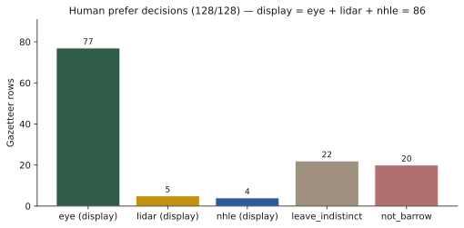
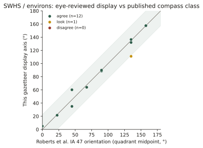
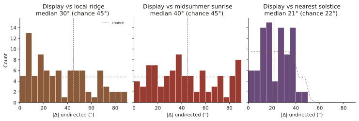
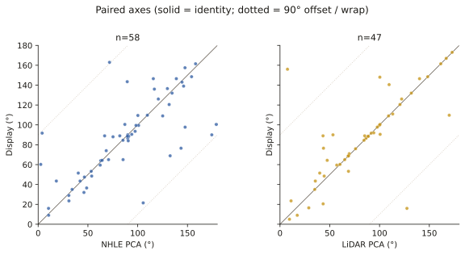

Wiltshire long-barrow long axes: a human-curated sample, ridges, and the solar overlay
Tim Daw · sarsen.org · 8 September 2026
Technical companion to the short note Do Wiltshire’s long barrows face the sun?. The interactive gazetteer is separate: timdaw37.github.io/wiltshire-long-barrows. This note is the orientation analysis only.
Wiltshire’s long barrows have been claimed for the sun, the moon, and the lie of the land. The claims are usually stronger than the axes. This paper uses a new sample: 86 undirected long axes from a chip-by-chip review of the Wiltshire gazetteer. NHLE scheduling-polygon PCA and auto LiDAR stay as evidence, not as the analysis set.
Three results.
- The axes are not a solar design. Midsummer sunrise is indistinguishable from chance. Scoring the nearest of midsummer and midwinter looks tight until chance is given the same two targets.
- They are not just built along ridges either. A local DTM plane (mound excluded) puts axes closer to the contour than chance (median mismatch 30° against 45°), but half the sample is still more than 30° off the ground.
- Where Historic England has already published a compass class, the eye sample agrees. After one aerial correction (Amesbury 140), 12 of 13 overlapping Stonehenge-WHS sites sit in the same quadrant as Roberts et al. (Internet Archaeology 47).
The pooled 86 are consistent with uniformity (Rayleigh p = 0.088). A weak east–west excess survives among HER-certain rows only. That is not a solstice, and it is not a tight cluster.

Figure 1. The 86 display axes, each drawn both ways. Dashed lines are flat-horizon sunrise at about 51.2°N: midsummer ~50°, equinox ~90°, midwinter ~129°. Descriptive overlays, not a claim of intent.
1. Why a new set of axes
Public axes in this gazetteer began as NHLE scheduling-polygon PCA (azimuth_deg). A scheduling outline is not the mound crest. It can pick up access land, twin mounds, tracks, or a near-orthogonal side of the polygon. Whitebarrow is the textbook case: NHLE ~4°, LiDAR mound ~92°.
A parallel LiDAR pipeline (EA Composite DTM 1 m chip → local-relief mound mask → PCA) writes azimuth_lidar_* and refuses scores below about 0.40. That still follows plough, dual mounds, and noise.
The display axis (azimuth_display_deg) is the human prefer decision: eye, lidar, or nhle, promoted without destroying NHLE. Rows marked not_barrow or leave_indistinct have no display axis and no NHLE fallback on the map.
Convention: image top = north, +x = east. Azimuth undirected, folded to 0–180°. Front or façade end is not asserted. For Cotswold–Severn sites the façade is not the mound long axis (Darvill 2004; Corcoran 1969). This paper measures the mound axis only.
MODERN_ALL_CANNINGS is excluded as a Neolithic azimuth.
2. Sample
Gazetteer n = 129 (128 Wheatley/HER/NHLE seed rows plus the Cuckoo Stone long barrow, added 8 September 2026). Prefer on the 129:
| prefer | n | In this paper’s axis sample? |
|---|---|---|
| eye | 77 | yes |
| lidar | 5 | yes |
| nhle | 4 | yes |
| leave_indistinct | 23 | no |
| not_barrow | 20 | no |
| display | 86 |
not_barrow means the chip does not show a usable long-barrow axis. It is not a verdict on the HER record. leave_indistinct means the mound is too weak to measure.
Display split: 75 HER certain, 11 possible; 80 earthen, 6 Cotswold–Severn (Millbarrow indistinct). Clusters among the 86: Stonehenge / Salisbury Plain 35, Wiltshire chalk 19, Avebury / Pewsey 13, North Wiltshire chalk 12, South Wiltshire / Chase fringe 7.

Figure 2. Prefer decisions on the original 128. Display = eye + lidar + nhle. Cuckoo Stone (SU14SW521) is a later 129th row, also leave_indistinct.
Cuckoo Stone long barrow (SU14SW521)
Roberts et al. DUR76 / Grinsell Durrington 76 / NHLE 1009130, “Long barrow 450 m WSW of Woodhenge”, NGR SU 14652 43241. Levelled; published class NE–SW; 40 × 28 m from the 1990 parchmark survey. Adjacent to the Cuckoo Stone sarsen, not the same monument.
It is not Wheatley seed SU14SW10W (South of Fargo Road), which sits 393 m south. A 1 m chip was fetched. Auto PCA 54.1° (conf 0.317) is below the refuse floor. Eye review of the chip sees nothing usable. Prefer stays leave_indistinct. It is not in the 86. Published NE–SW remains on the record; it is not treated as a measured axis here.
3. Methods
Statistics. Undirected axes are axial data. Angles in [0, 180) are doubled before circular summaries. Reported: axial mean and mean resultant length (\bar{R}) of doubled angles; Rayleigh test (Mardia–Jupp p); V-test toward specified directions as a descriptive check; bootstrap 95% intervals (10 000 resamples, seed 20260908). If bootstrap spread of the mean covers ≥ 90° of the axial circle, the mean is unidentified. Histograms use 10° and 15° bins. Pairwise undirected difference: (|\Delta| = \min(|a-b|,\,180-|a-b|)). Naive means of degrees are not used.
Solar overlays. Geometric sunrise at 51.2°N, true solar, no refraction, no local horizon. Values as on the map (generate.py): midsummer 50.2°, equinox 89.7°, midwinter 129.0°. On an undirected 0–180° axis, midsummer sunrise is the same line as midwinter sunset. An east–west peak is not a unique solar event.
Ridge test. For each of the 86: 1.2 km EA Composite DTM chip at ~10 m; plane fit on an annulus 60–350 m from the point (mound excluded). Ridge/contour = downslope + 90°, folded 0–180°. Chance median mismatch to one random undirected axis is 45°. Chance median to the nearest of the two solstice directions is about 22°.
Literature axes. Roberts et al. 2018 Table 1 (CC BY) compass classes, matched on SMR / OSGB. Agreement = display within 22.5° of the class midpoint.
Re-run (does not write NHLE fields): python scripts/orientation_analysis.py then python scripts/orientation_robust.py.
4. Atlas check: eye versus published SWHS classes
Roberts et al. reviewed 21 long and oval barrows in the Stonehenge WHS and environs with earthwork and geophysics plans. That is the right comparison: surveyors, not scheduling polygons.

Figure 3. Display azimuth against Roberts class midpoint. Green band = same quadrant. After Amesbury 140: 12 agree, 1 look, 0 disagree.
Where both measured the same mound, we agree. Winterbourne Stoke 1 (35°, their NE–SW), Amesbury 42, Amesbury 140 (157.5°, their NNW–SSE, from aerials — LiDAR was unclear), Knighton Down, Figheldean 31, Netheravon Bake, Wilsford 13, 30 and 34, Winterbourne Stoke Down, Netheravon 6, Figheldean 27.
Lake Group (SU14SW133, WIL41) is 111° against their NW–SE (midpoint 135°, Δ 24°). Re-looked; kept.
Amesbury 140 was the one real dispute over an axis. First eye on the chip was 91° (E–W). Aerial cropmarks are NNW–SSE. HER MWI12478: probable Neolithic long barrow, parallel ditches about 20 m long and 12 m apart. Display is now 157.5°. That correction also removes a false east–west point from a possible row, which is why the pooled Rayleigh test moved (section 6).
In the gazetteer, no axis
HER (and in several cases excavation) treats these as long barrows. The chips are too weak. They stay as points.
| Roberts | Gazetteer | Record |
|---|---|---|
| AM14 | SU14SW127 |
NHLE 1008953 long barrow, NNW–SSE, mound to 1.8 m |
| WS86 | MWI75694 |
Levelled long barrow (2015–16 confirmation) |
| WOO2 | SU13NW151 |
Excavated (Vatchers 1963 / Harding and Gingell 1986). Prefer leave_indistinct, not not_barrow |
| AM7 / AM10a | SU14SW105 |
Oval / dubious long (Field et al. 2014) |
| DUR76 | SU14SW521 |
Cuckoo Stone long barrow, NHLE 1009130. Eye: indistinct. Chip and published NE–SW on file; no display |
WS71 and the bowl-barrow scheduling
SU14SW997 is in the list because HER MWI13159 / SU14SW997 is titled Neolithic long barrow (Roberts WS71; excavated 2015–16; NE–SW; unscheduled as a long barrow).
The same NGR is NHLE 1011046: “Bowl barrow 400 m south east of Longbarrow Cross Roads” (1995; 26 m diameter). The gazetteer attached a circular scheduling polygon (29.6 × 29.6 m, PCA 63.1°) to a long-barrow HER row. That PCA is not a long-barrow axis and is not used as display. Prefer leave_indistinct.
5. Ridges versus solstices
Peer consensus for Wiltshire chalk is no clear common astronomical alignment; topography matters (Ruggles 1997, 1999; Roberts et al. 2018, §5.5; Darvill 1997, 178; McOmish et al. 2002). Field (2006, 69) floated midsummer sunrise for Winterbourne Stoke 1 and noted the coincidence with the ridge. Burl’s 1987 lunar-arc claim is contested by Ruggles.

Figure 4. Mismatch of each display axis to three hypotheses. Dotted = chance. Right-hand panel: chance is allowed both solstice targets.
| Hypothesis | Median |Δ| | Chance median | Within 15° (chance) |
|---|---|---|---|
| Local ridge | 30° | 45° | 27% (17%) |
| Ridge, slope ≥ 1° (n=57) | 26° | 45° | 33% (17%) |
| Midsummer sunrise ~50° | 40° | 45° | 16% (17%) |
| Nearest of the two solstices | 21° | 22° | 30% (33%) |
| Equinox ~90° | 37° | 45° | 26% (17%) |
Ridge-following is real and modest. Axes prefer the contour to the fall line (only 12 of 86 within 22.5° of downslope). They are not a ridge atlas.
Solstice is not an effect. Midsummer hits 15° as often as a random direction. Nearest-of-two is the fair null for “some solstice”; the data do not beat it.

Figure 5. Display against local ridge. Darker points = steeper plane. A ridge-built sample would hug the diagonal.
Winterbourne Stoke 1 (SU14SW125): display 35°, Roberts NE–SW, Field’s midsummer ~50°. Agreement with the surveyors. The 60–350 m plane is almost flat (slope 0.3°) and comes out at 50° — Field’s coincidence, not a forced choice.
West Kennet (SU16NW100, 84.5°) sits on a spur of the Kennet downs; its long axis follows the nose of that spur (east–west), with the river valley under the north flank. A sceptic who says it runs along the ridge is right at valley scale. East Kennet (SU16NW101, 139°) sits on the same high ground below the crest of a NE-facing slope (NHLE 1012323: NW–SE); its long axis is across the ridge, not along it — see fig-16-kennet-pair. The 60–350 m plane fails both celebrity mounds, in opposite directions: West Kennet mismatch 74° (westward rise onto the downs dominates a two-sided ridge); East Kennet mismatch 7° (plane strike ~132° follows the scarp, not the E–W watershed). Believe the contours, not the screen, for named topography. Two neighbours, two recipes; the 86 as a set still only modestly follow local tilt.
6. The 86 after Amesbury 140
Moving Amesbury 140 from a LiDAR-guessed 91° to aerial NNW–SSE 157.5° takes a spurious east–west point out of a possible cropmark. Pooled Rayleigh p moves from 0.046 to 0.088.
| n | (\bar{R}) | Rayleigh p | |
|---|---|---|---|
| All display | 86 | 0.17 | 0.088 |
| Earthen only | 80 | 0.14 | 0.20 |
| HER certain only | 75 | 0.21 | 0.031 |
| Stonehenge / Salisbury Plain | 35 | 0.15 | 0.46 |
| Cotswold–Severn | 6 | 0.73 | 0.034 |
The pooled sample is consistent with uniformity. Earthen majority likewise. HER-certain still shows a weak east–west excess (p = 0.031): not a solstice, and not tight (bootstrap mean CI still ~47° wide). Cotswold–Severn n=6 is too small; four of the six sit near E–W as mound long axes, not as façades.

Figure 6. 10° bins, n=86. Peak 90–100° (10; uniform expectation 4.8). Spread, not a design.
Axial mean 86.9° (bootstrap 95% CI 59–117°). Display tracks LiDAR (median |Δ| 2.2°, n=47) more closely than NHLE (6.6°, n=58). NHLE still produces near-orthogonal footprint failures. That is why the chips were reviewed.

Figure 7. Paired axes. Solid = identity; dotted = 90° offset. NHLE has more orthogonal outliers than LiDAR.
7. Caveats
- Undirected axes. Midsummer sunrise ≡ midwinter sunset after the 0–180 fold.
- Ridge is a local plane, not a named spur and not a viewshed. Scale matters (WS1).
- No topographic horizon, no refraction, no woodland model.
- Eye overlay is a chip reading; Amesbury 140 is an aerial class midpoint (157.5°).
- Cuckoo Stone: published NE–SW is a record class, not an eye measurement.
- Roberts classes are 45° buckets.
- Ashbee, Kinnes 1992, and McOmish et al. 2002 SPTA tables were not ingested as numbers.
- No intent claims.
8. Data
Display sample: scripts/orientation_batch_out/analysis/display_sample.csv.
Roberts match: roberts_match.csv. Ridge table: ridge_vs_axis.csv.
Figures: docs/analysis/fig-01 … fig-14 (SVG and PNG).
Map bot owns data/long_barrows.json, index.html, and push. Analysis scripts are read-only on NHLE azimuth_deg.
Compilation © Tim Daw / sarsen.org · CC BY-SA 4.0.
NHLE © Historic England / OGL. EA LiDAR © Environment Agency / OGL.
Roberts et al. 2018 Table 1 / Figure 14 © the authors / Internet Archaeology, CC BY.
Zenodo Wheatley recreation 10.5281/zenodo.11005373; Kutty 2024 10.5281/zenodo.10989406.
Sources used (not invented)
- Roberts, D. et al. 2018. Internet Archaeology 47. https://doi.org/10.11141/ia.47.7
- Ruggles 1997 (PBA Astronomy and Stonehenge); Ruggles 1999, 126–127
- Darvill 1997, 178; Darvill 2004; Corcoran 1969; Field 2006, 69
- McOmish, Field and Brown 2002; Bowden et al. 2015; Bax et al. 2010
- Burl 1987 — contested (Ruggles)
- Harding and Gingell 1986 (Woodford 2)
- Wiltshire HER MWI12478, MWI12487, MWI13159, MWI75694, MWI10607
- NHLE 1008953 (long barrow); 1009130 (Cuckoo Stone long barrow); 1011046 (bowl barrow at the WS71 HER NGR)
- Historic England NHLE; Environment Agency Composite DTM 1 m